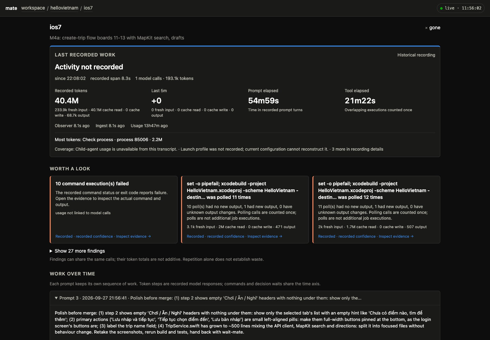
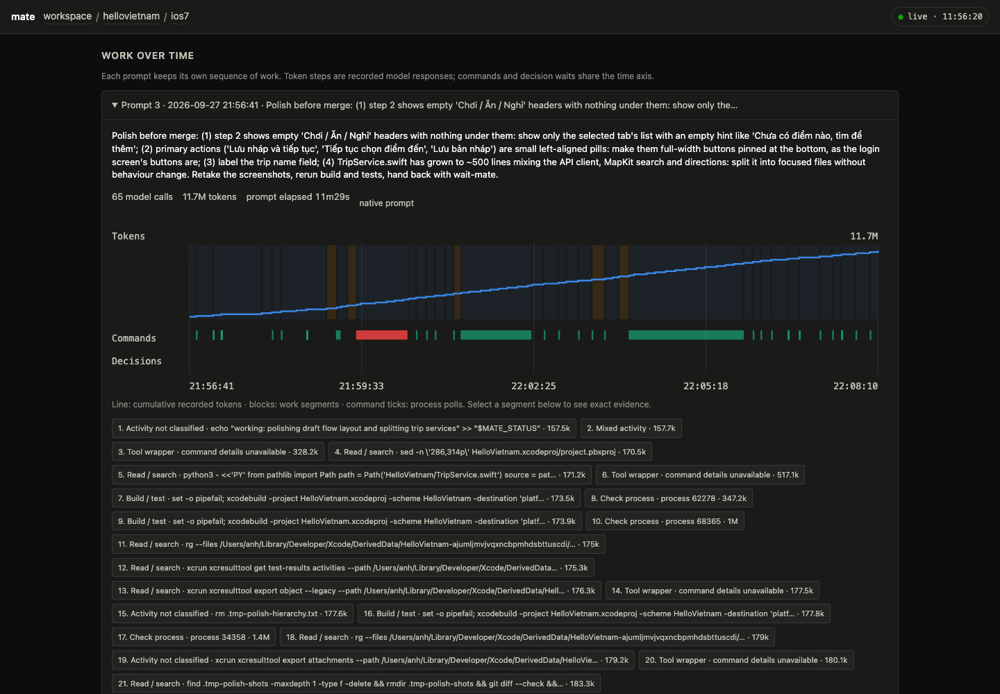
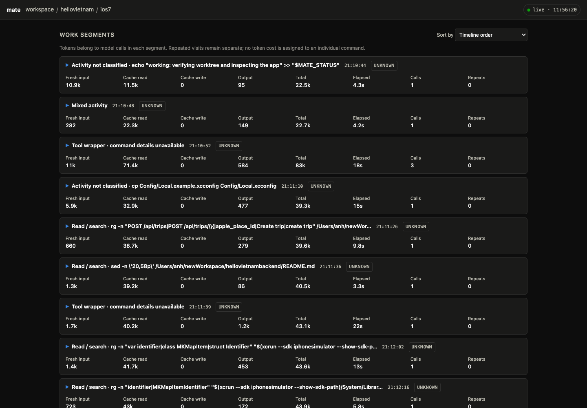

Observer của Crew: bốn câu hỏi phải có câu trả lời ngay màn hình đầu
Feed được. Ba trong bốn câu (token, tool call theo phần, lặp) đã có đủ dữ liệu trong khối performance mà working tree đang trả về, chỉ chưa được gom thành con số ở màn hình đầu. Câu thứ tư (bước suy luận tốn nhất) có số theo từng model call nhưng projector đang xếp hạng theo tổng token, nên "Most tokens" luôn trỏ vào một đoạn poll. Điểm yếu thật sự nằm ở tên đoạn: 71/184 đoạn của ios7 chưa gọi được tên, và chính các đoạn đó chứa 59% output và 69% thinking, vì Codex gói apply_patch trong wrapper JavaScript mà classifier chưa đọc.
apply_patch nhưng đang hiện "Tool wrapper"Có số, chưa xếp hạngNguồn: GET http://127.0.0.1:7778/api/projects/hellovietnam/tasks/ios7 lúc 11:51 hôm nay (review server của bản working tree, DB tách riêng đọc transcript thật, xem docs/evidence/crew-observability-2026-09-28.md); internal/diagnostics, internal/telemetry, internal/dashboard/ui/app.js; screenshot chụp từ đúng trang đó ở 1440×1000. Dashboard 7777 mà console đang dùng là build cũ: response của nó không có khối performance.
1. Kết luận theo từng câu hỏi
| Câu hỏi của captain | Hôm nay dashboard trả lời thế nào | Dữ liệu có chưa | Thiếu gì để trả lời ngay màn hình đầu |
|---|---|---|---|
| Tiêu thụ bao nhiêu token | Đủ: tổng, 4 bucket, thinking, theo prompt, theo đoạn, theo call, 5 phút gần nhất, context cuối. | Có sẵn | Chỉ thiếu giá cho gpt-6-sol trong pricing.yaml nên cost và context % là ?. |
| Chạy bao nhiêu tool call, cho phần nào | Có tổng 360 và 184 hàng đoạn; không có bảng gom theo loại việc. Người đọc phải cuộn 184 hàng để tự cộng. | Tính được | Gom segments[].kind + execution_ids thành tool_mix (theo Crew và theo prompt). Đọc wrapper JS của Codex để 39% đoạn "không tên" có tên thật (đa số là apply_patch = sửa file). |
| Bị lặp bao nhiêu lần | Rải trong 27 finding "was polled N times" và cột Repeats từng hàng; không có một dòng tổng. | Tính được | Gom processes[] + đoạn kind=poll thành một dòng: 17 chuỗi · 153 poll · 123 không đổi · 20,6M token (51%). Đoạn poll không chồng nhau nên cộng được, khác với finding. |
| Suy luận bước nào tốn nhất | "Most tokens" xếp theo tổng token → cache read chi phối → luôn là một đoạn "Check process". Không có góc nhìn output + thinking. | Có số, chưa xếp hạng | Xếp hạng thứ hai theo output + thinking (call và đoạn), hiện cạnh xếp hạng theo context. Không cần collector mới. |
2. Hiện trạng: trang Crew ở bản working tree (review server 7778)
Đây là trang mà bản build hôm nay đã vẽ cho ios7. Nó đã đúng hướng của docs/plans/crew-harness-observability-2026-09-28.md mục 6.1 (đang làm gì, đáng xem, timeline, bảng đoạn, bằng chứng). Bốn câu hỏi của captain nằm trong đó nhưng phải đi tìm.



Năm chỗ chưa đạt so với yêu cầu
- Tool call theo phần không có tổng: 360 tool call, 162 lệnh native, 153 poll, 207 wrapper chỉ đọc được bằng cách tự cộng từ 184 hàng.
- Lặp không có con số một dòng. 17 finding polling hiện cùng một câu, người đọc không biết tổng là 153 poll, 123 lần không có output mới, và 51% token của Crew nằm ở đó.
- Bước tốn nhất đang trả lời sai câu hỏi: xếp theo tổng token nên "Most tokens" là Check process · process 85006 · 2.2M, một đoạn chỉ sinh 496 output. Bước model thực sự suy luận nhiều nhất (call #301, 1,9k output + 790 thinking) không xuất hiện ở đâu.
- Tên đoạn: 71/184 đoạn (39%) là "Tool wrapper" hoặc "Activity not classified". Chúng chiếm 26,6% token nhưng 58,7% output và 68,5% thinking, tức là toàn bộ phần viết code. Lý do: Codex 0.157 gói lệnh trong JS (
text(await tools.apply_patch(…)),const r=await tools.exec_command({cmd:"cat >> …"})) và classifier chưa đọc bên trong. Hai đoạncat >> File.swift <<'EOF'còn bị gán nhầm là "Read / search". - Nhãn và câu dài, tiếng Anh, lệnh bị cắt giữa chừng ("xcodebuild -project HelloVietnam.xcodeproj -scheme HelloVietnam -destin… was polled 11 times"). Mục 6.1 của plan yêu cầu câu có đối tượng, số lần và chi phí.
3. Thiết kế đề xuất: trang Crew với "bốn câu trả lời" ở trên cùng
Mock dưới đây vẽ bằng đúng token màu và chữ của app.css, chữ trong UI giữ tiếng Anh như dashboard hiện tại. Mọi con số là số thật của ios7; timeline Prompt 3 được vẽ từ timestamp thật của 37 đoạn, 44 lệnh, 25 poll và 65 model call. Các ô đánh số ①–⑧ được đối chiếu với dữ liệu ở mục 4. Nhãn có dấu D5 chỉ có sau khi sửa classifier; hôm nay chúng hiện là "Tool wrapper · command details unavailable".
ios7
× gone · finished · merged⌘ codex 0.157.1gpt-6-sol · mediummate/ios7 · gone (merged)1 question · waited 1m02s1Tokens
2Tool calls by work
3Repeats
xcodebuild … TripUITests polled 12× · 11 unchanged · 1m48s · 1.7M → open chainSame content re-read: 0 · same-error retries: 0 · repair loops: 0Repeats inside segments: 122 (all in poll segments)4Most expensive step
By output + thinking (what the model wrote)
rg read → opensegment with most: apply_patch ×5D5 (P1) · 3.8k + 691 · 5 calls · 1m24sBy context re-sent (total tokens)
5Worth a look
rg exit 1 once. Each xcodebuild failure carries a different error signature, so no identical retry was detected; 42 file changes were recorded across the run.tokens not linked to model calls (native commands)Recorded · Inspect commands and exit codes →6Work over time · Prompt 3 of 3
7Tool mix by prompt
| Prompt | Calls | Tokens | Check process | Unnamed | Read / search | Build / test | Git | Repeats | Failed cmds |
|---|---|---|---|---|---|---|---|---|---|
| P1 · brief | 61 | 3.2M | 24 · 1.4M | 23 · 1.1M | 8 · 0.4M | 6 · 0.3M | — | 11 | 4 |
| P2 · presentation bug | 237 | 25.5M | 129 · 13.8M | 54 · 6.1M | 29 · 2.8M | 21 · 2.3M | 4 · 0.5M | 91 | 5 |
| P3 · polish | 65 | 11.7M | 30 · 5.4M | 20 · 3.6M | 9 · 1.6M | 5 · 0.9M | 1 · 0.2M | 20 | 1 |
| Crew | 363 | 40.4M | 183 · 20.6M | 97 · 10.7M | 46 · 4.8M | 32 · 3.6M | 5 · 0.7M | 122 | 10 |
8Work segments
| Segment | Kind | Prompt | Calls | Tool calls | Fresh | Cache | Output | Thinking | Total | Elapsed | Repeats |
|---|---|---|---|---|---|---|---|---|---|---|---|
Edit files · apply_patch ×5 · TripViews.swift, TripService.swiftD5 | edit | P1 21:13 | 5 | 5 | 4.4k | 281.6k | 3.8k | 691 | 289.9k | 1m24s | 0 |
Edit files · apply_patch ×4D5 | edit | P2 21:28 | 4 | 4 | 5.0k | 338.6k | 3.5k | 654 | 347.1k | 1m15s | 0 |
Mixed · Promise.allSettled(simulator ×2) → apply_patch ×3D5 | mixed | P2 21:33 | 4 | 4 | 7.6k | 407.2k | 1.9k | 1.0k | 416.7k | 60s | 0 |
Mixed · git status + rg (40 KB, truncated) → apply_patchD5 | mixed | P3 21:57 | 2 | 2 | 10.7k | 315.3k | 2.2k | 802 | 328.2k | 49s | 0 |
Edit files · cat >> TripViews.swift <<'EOF'D5 (today: "Read / search") | edit | P1 21:13 | 1 | 1 | 498 | 47.5k | 2.3k | 16 | 50.3k | 44s | 0 |
Edit files · cat >> TripService.swift <<'EOF'D5 | edit | P1 21:12 | 1 | 1 | 416 | 43.9k | 2.1k | 93 | 46.4k | 40s | 0 |
Mixed · git status + rg → apply_patch · Prompt 3 · 21:57:04 → 21:57:53 · 2 model calls · tool elapsed 1.2s
ledger.tokens, prompt_turns[].tokens, turns[].context_tokens_after.kind: số model call, số execution, token và tỷ lệ. Thanh "Unnamed" phải hiện rõ để captain thấy phần chưa đo được.processes[] (polls, unchanged) và các đoạn kind=poll; đếm finding repeated_read, repeated_error, repair_test_loop kể cả khi bằng 0.segments[], executions[], turns[] đã có.prompt_id; hàng cuối phải bằng ledger (363 call, 40,4M).4. Feed được không? Ma trận dữ liệu cho từng thành phần
Trạng thái tính trên bản working tree (đang chạy ở 7778). Có sẵn = đã có trong JSON hôm nay. Tính được = có đủ dữ liệu gốc, chỉ thiếu phép gom hoặc xếp hạng trong projector/UI. Thiếu = chưa có dữ liệu. Cột Codex và Claude nói riêng vì hai adapter khác nhau: Codex có record native (CommandExecution với process id, exit code, output bytes), Claude chỉ có tool call/result chuẩn hoá.
| # | Thành phần UI | Nguồn dữ liệu | Codex | Claude | Trạng thái | Việc cần làm |
|---|---|---|---|---|---|---|
| ① | Token tổng, 4 bucket, thinking | turn → ledger.tokens, performance.tokens | ✓ | ✓ | Có sẵn | — |
| ① | Token theo prompt | prompt_turns[].tokens (Codex turn_id, Claude promptId) | ✓ | ✓ | Có sẵn | — |
| ① | Context cuối, context % | turns[].context_tokens_after; % cần pricing.context_window | ✓ | ✓ | % thiếu giá | D7: thêm gpt-6-sol vào pricing.yaml |
| ① | Cost | ledger.cost qua pricing | ✓ | ✓ | Thiếu giá | D7 |
| ② | Tool call tổng · lệnh native · poll · wrapper | ledger.tool_count; executions[] (is_wrapper, poll, status, exit_code) | ✓ native | chỉ tool_call/result, không lệnh con | Có sẵn | — |
| ②⑦ | Tool call theo loại việc (Crew và theo prompt) | gom segments[].kind, call_ids, execution_ids, prompt_id | ✓ | ✓ (kind theo tên tool Read/Edit/Bash/Grep) | Tính được | D1: tool_mix trong projector |
| ②⑧ | Tên đoạn cụ thể ("phần nào") | segments[].label từ lệnh native; wrapper JS chưa đọc | 39% đoạn ios7 không tên | tên tool luôn có | Có nhưng yếu | D5: đọc tools.apply_patch, tools.exec_command, heredoc, Promise.allSettled |
| ③ | Chuỗi poll, số poll, output không đổi | processes[], finding process_polling (process id từ CommandExecution) | ✓ | ✗ không có process id | Có sẵn (Codex) | Claude: nhận diện poll theo lệnh lặp lại giống nhau, làm sau |
| ③ | Một dòng tổng lặp (17 · 153 · 123 · 20,6M) | gom processes[] + đoạn kind=poll (không chồng nhau nên cộng đúng) | ✓ | ✗ | Tính được | D3: loops trong projector |
| ③ | Đọc lại nội dung không đổi | finding repeated_read: cùng file/range/query + hash output, reset khi có file change | ✓ | ✓ (có hash output) | Có sẵn (0 trên ios7) | — |
| ③ | Retry cùng lỗi, vòng sửa–test | repeated_error, repair_test_loop + progress (FileChange) | ✓ | chỉ is_error, không FileChange | Có sẵn (Codex) | Claude: lấy file change từ Edit/Write, làm sau |
| ③⑧ | Repeats từng đoạn | segments[].repeat_count | ✓ | ✓ | Có sẵn | — |
| ④ | Bước tốn nhất theo output + thinking | turns[].tokens.output/.thinking, segments[].tokens; chưa có xếp hạng | ✓ | ✓ | Tính được | D2: top_output_segment_ids, top_output_call_ids + sort trong UI |
| ④ | Bước ngốn context nhất | top_segment_ids (theo total) | ✓ | ✓ | Có sẵn | đổi nhãn "Most tokens" → "By context re-sent" |
| ⑥⑧ | Thời gian: prompt, tool, poll, chờ, chưa phân bổ | time.*, segments[].elapsed_ms/tool_elapsed_ms, executions[].duration_ms | ✓ native | call → result, không native | Có sẵn | — |
| ⑤⑧ | Lệnh thật, exit code, output bytes, error signature | executions[] (exec_command) | ✓ | ✗ exit code; có is_error | Có sẵn (Codex) | — |
| ⑤⑥ | Chờ quyết định | questions, finding decision_wait | ✓ | ✓ | Có sẵn | — |
| ⑧ | Freshness: observer, ingest, usage | freshness + telemetry_cursor.observed_at | ✓ | ✓ | Có sẵn | — |
| ⑧ | Launch profile: model, effort, hash file chỉ dẫn, commit | telemetry.profile ghi lúc spawn | crew mới ✓ · run cũ ✗ | như Codex | Có sẵn cho crew mới | — |
| — | Đường ống live cho console đang dùng | console ghi telemetry.* + schema 3; dashboard 7777 là build cũ, không có performance | — | — | Thiếu trên 7777 | D6: build mới, đóng console, migrate, mở lại (captain đã chọn hoãn) |
Hai bảo toàn giữ nguyên: token chỉ có một sổ cái là turn (usage native chỉ để nối, không cộng); token của finding không cộng được với nhau vì các finding có thể dùng chung call. Chỉ đoạn (segment) là phân hoạch của call, nên mọi phép gom ở ②③⑦ đều cộng về đúng 363 call và 40,4M.
5. Dữ liệu đi từ đâu tới UI
turn là sổ cái duy nhất.- 7777 (console đang dùng): build cũ, không ghi telemetry, response không có
.performance. - 7778 (review): build working tree, DB tách riêng, đọc transcript thật. Đây là nguồn của mọi số trong trang này.
- Chỉ observer trong console ghi DB; dashboard mở DB read-only và không migrate. Reindex dựng lại toàn bộ từ transcript, nên projector đổi được mà không mất dữ liệu.
- Bảo toàn (gate trong plan mục 7): token theo call = theo đoạn = theo prompt = ledger, qua restart và reindex.
6. Việc cần làm để UI đề xuất chạy được
D1 · tool_mix trong projector Go · nhỏ
Gom đoạn theo kind cho cả Crew và từng prompt: số call, số execution, token 4 bucket + thinking, elapsed, repeats. Ghi contract vào docs/dashboard.md. Test bằng fixture ios7: 183 + 97 + 46 + 32 + 5 = 363.
D2 · xếp hạng theo output + thinking Go + UI · nhỏ
top_output_segment_ids, top_output_call_ids bên cạnh top_segment_ids. UI: card ④ hai dòng, sort "Output + thinking" trong bảng đoạn.
D3 · loops một dòng Go · nhỏ
Từ processes[] và đoạn kind=poll: chuỗi (≥ ngưỡng 3), poll, unchanged, progress, tiến trình bị poll, token của call poll, số finding repeated_read / repeated_error / repair_test_loop.
D4 · UI màn hình đầu app.js + app.css · vừa
Dải "bốn câu trả lời", chip kind và lọc, cột Kind/Prompt/Tool calls/Thinking, ngoặc ×n trên timeline, thanh output dưới đường token, chip loại cho finding, câu theo mẫu mục 6.1. Mở rộng ui_observability_test.cjs.
D5 · đọc wrapper JS của Codex 0.157 harness + diagnostics · vừa
text(await tools.apply_patch( → Edit files kèm tên file; tools.exec_command({cmd: → lệnh thật; cat >> F <<'EOF' → Edit files; Promise.allSettled → Mixed với danh sách. Mục tiêu đo được: đoạn không tên của ios7 từ 71 xuống dưới 18 (10%), kind "edit" xuất hiện. Đây là việc nâng giá trị nhiều nhất vì phần viết code đang vô hình.
D6 · rollout cho console thật thủ tục
Build binary, đóng console (single-writer lock), migrate mate.db lên schema 3, mở lại console bằng binary mới để observer ghi telemetry, rồi mở lại 7777. Captain đã chọn giữ console hiện tại và xem ở 7778; cho đến khi làm D6, 7777 không có gì trong số này.
D7 · pricing.yaml config · nhỏ
Thêm dòng gpt-6-sol (giá 4 bucket + context_window) để cost và context % thôi là ?. Không đoán giá; thiếu giá vẫn phải là ?.
Crew Claude giới hạn
Adapter chuẩn hoá của Claude cho token, đoạn theo tên tool, đọc lại (có hash), thời gian call → result. Không có process id, exit code, FileChange native, nên card ③ hiện "chuỗi poll: không đo được cho harness này" thay vì 0. freshness.missing đã nói điều này; UI cần hiện ngay trong card.
Thứ tự đề nghị: D1 → D2 → D3 → D4 trên dữ liệu đang có (không đụng collector, không đụng schema), rồi D5. D6 và D7 độc lập, làm lúc captain rảnh console.
7. Cần captain chốt
8. Kiểm chứng số liệu
Mọi con số trong trang này tái tạo được từ review server 7778 (khi nó còn chạy) hoặc từ JSON đã lưu.
curl -s http://127.0.0.1:7778/api/projects/hellovietnam/tasks/ios7 > ios7.json
jq '.performance | {model_calls, tokens, prompts: (.prompt_turns|length), segments: (.segments|length), findings: (.findings|length)}' ios7.json
# 363 · 40,409,527 · 3 · 184 · 30
jq '.performance.segments | group_by(.kind) | map({kind: .[0].kind, calls: (map(.model_calls)|add), tokens: (map(.tokens.total)|add), execs: (map(.execution_ids|length)|add)})' ios7.json
# poll 183/20.6M · wrapper 61/6.0M · read 46/4.8M · unknown 33/4.5M · test 32/3.6M · git 5/0.7M · mixed 3/0.3M
jq '[.performance.executions[] | select(.poll)] | length' ios7.json # 153
jq '[.performance.processes[].unchanged_polls] | add' ios7.json # 123
jq '.turns | sort_by(-(.tokens.output + .tokens.thinking)) | .[0] | {ordinal, tokens, duration_ms}' ios7.json # #301
jq '[.performance.executions[] | select(.status=="failed" and (.is_wrapper|not))] | map(.exit_code)' ios7.json # 9× 65, 1× 1
curl -s http://127.0.0.1:7777/api/projects/hellovietnam/tasks/ios7 | jq '.performance' # null: build cũ